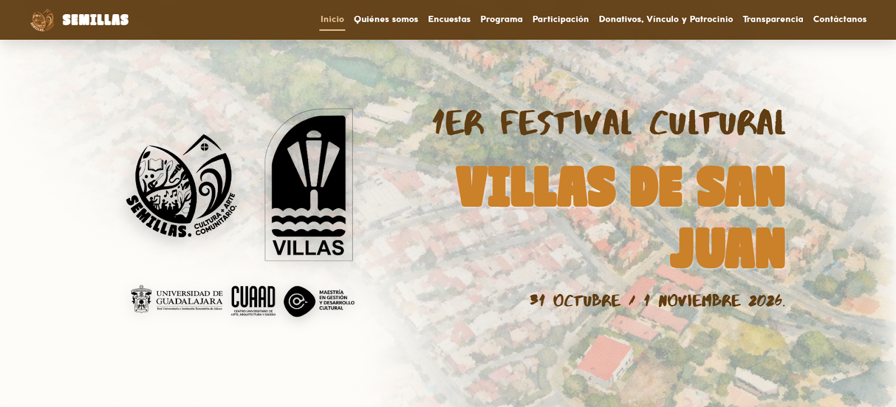
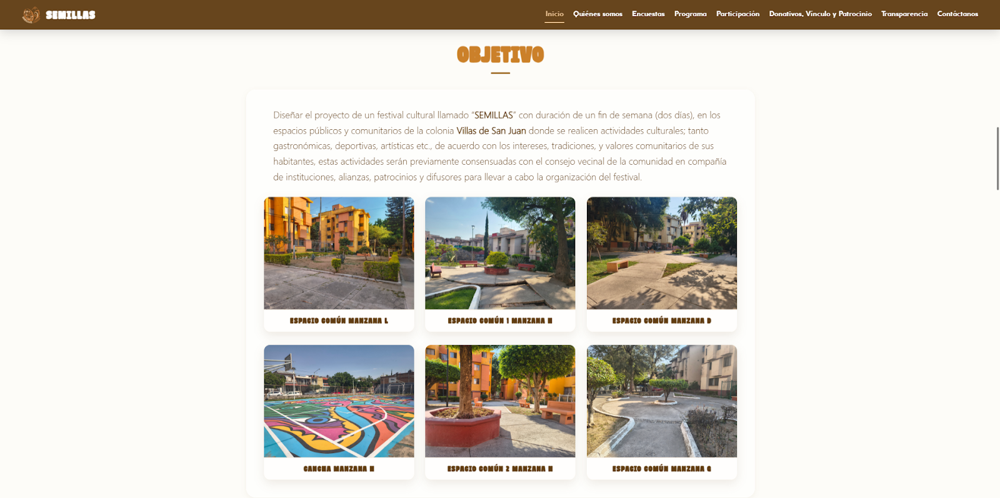
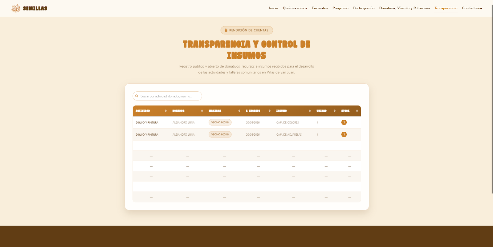
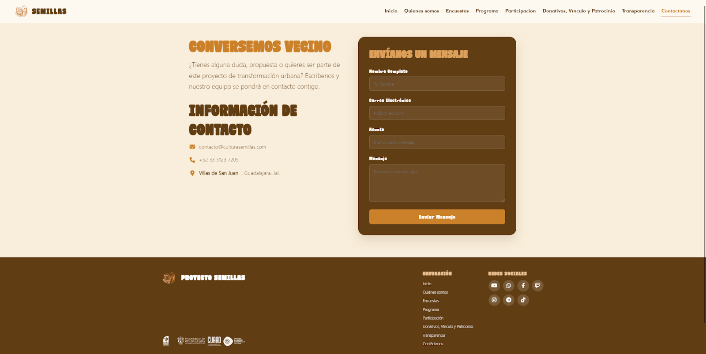

ACTIVA
CASE_STUDY // ID: CS-2026-LIVE

VISTA PANORÁMICA // 01 INICIO
01. VISTA DE INICIO //
PROPUESTA Y
COMUNIDAD
Diseño enfocado en la activación cultural
y
comunitaria de Villas de San Juan con acceso ágil a eventos e
información.

ÁREA 2 // 02 CATÁLOGO MODULAR
02. CATÁLOGO MODULAR DE
ESPACIOS Y
TALLERES
Distribución organizada de actividades
culturales,
gastronómicas, deportivas y artísticas orientadas a la
participación
vecinal.

ÁREA 3 // 03 TRANSPARENCIA
03. TRANSPARENCIA Y RENDICIÓN
COMUNITARIA
Sección informativa y documental que
refuerza la
confianza, intereses y valores compartidos de la comunidad.

ÁREA 4 // 04 CONTACTO
04. CANALES DIRECTOS DE
CONTACTO
Puntos de contacto directo para
vinculación
comunitaria, registro en talleres y propuestas ciudadanas.
01
04